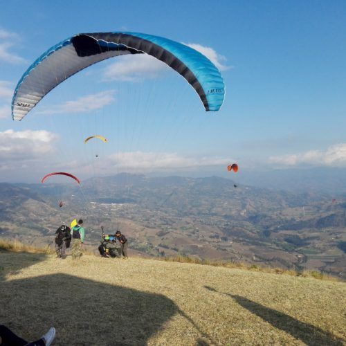
Ventaquemada
Centro de Boyacá, cerca de Tunja
Parapente
- Principiante–intermedio
- Centro
Vuelos y recorridos suspendidos en el aire sobre los paisajes de Boyacá.
11 lugares en 6 regiones
Si le temes a las alturas, quizás prefieras explorar otro elemento. Muchos vuelos se pueden hacer acompañado de un piloto instructor.

Centro de Boyacá, cerca de Tunja
Parapente
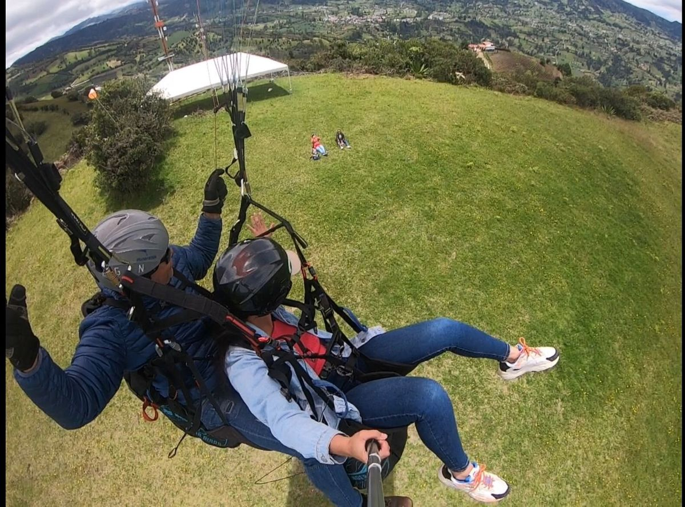
Centro de Boyacá
Parapente
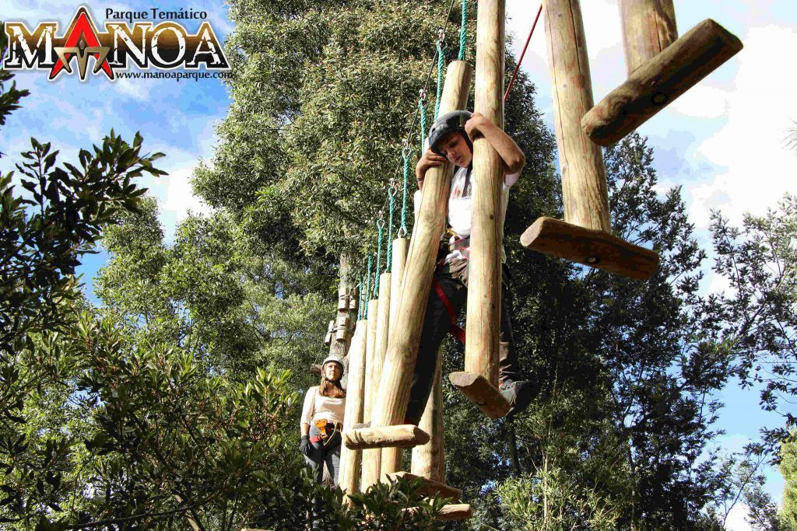
A 15 min de Paipa
Arborismo y canopy (hasta 5 líneas continuas)
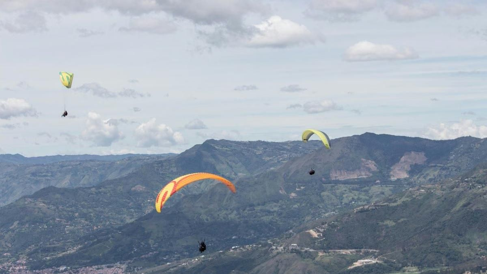
Paipa
Parapente de vuelo térmico y dinámico
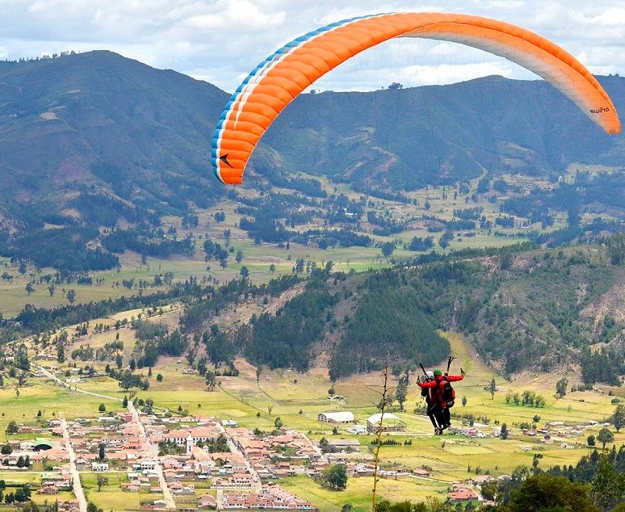
Santa Rosa de Viterbo
Parapente
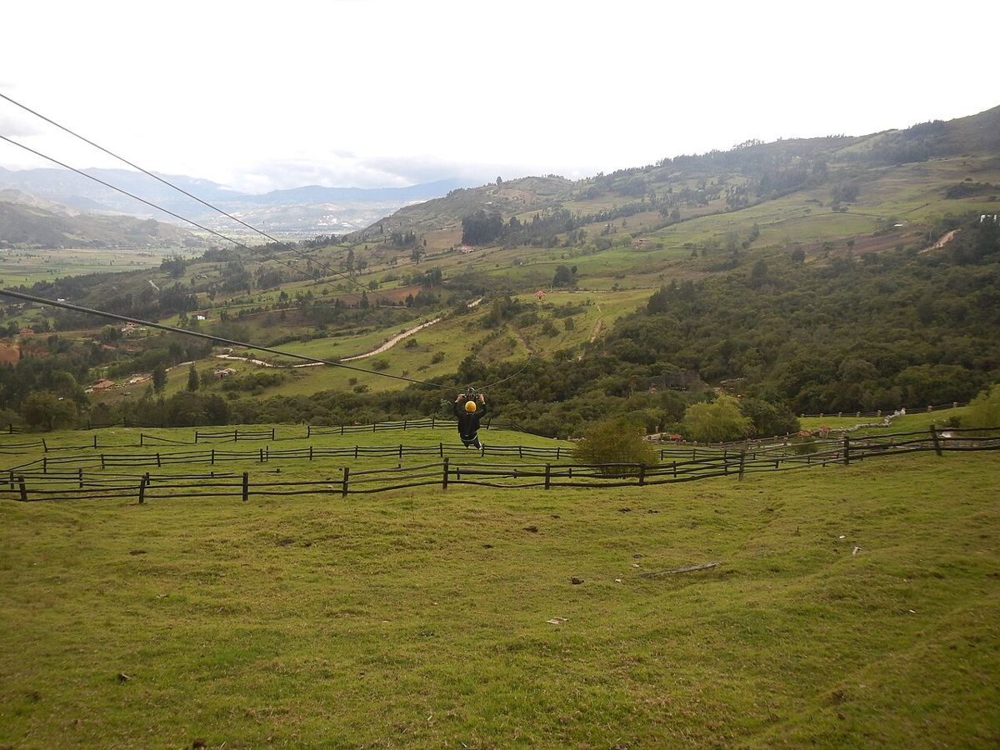
Tibasosa
Canopy / tirolina
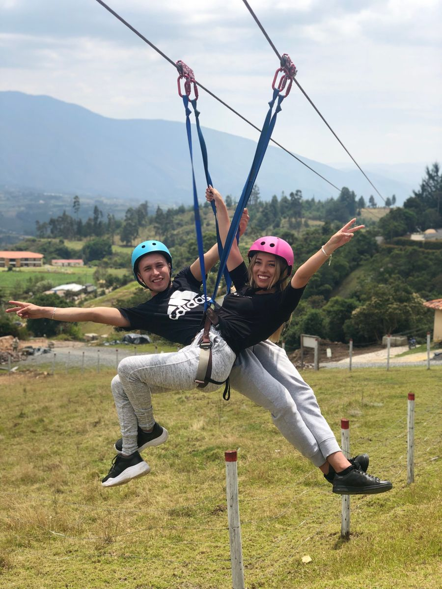
Villa de Leyva – Gachantivá
Canopy, canopy Superman y bicicletas aéreas
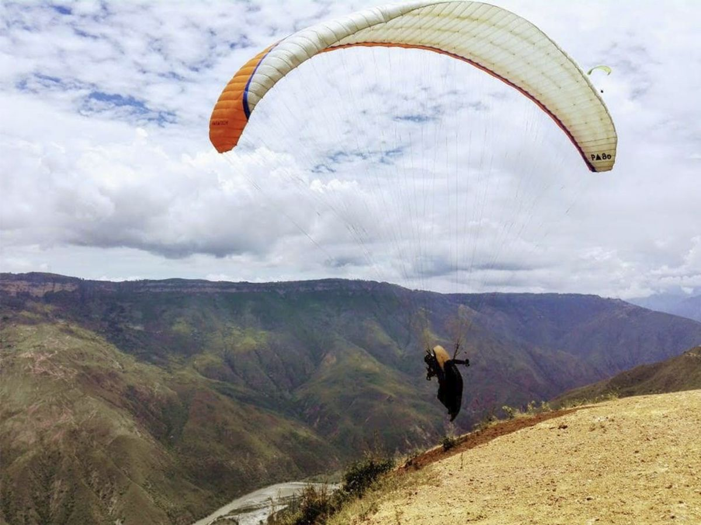
Villa de Leyva
Parapente
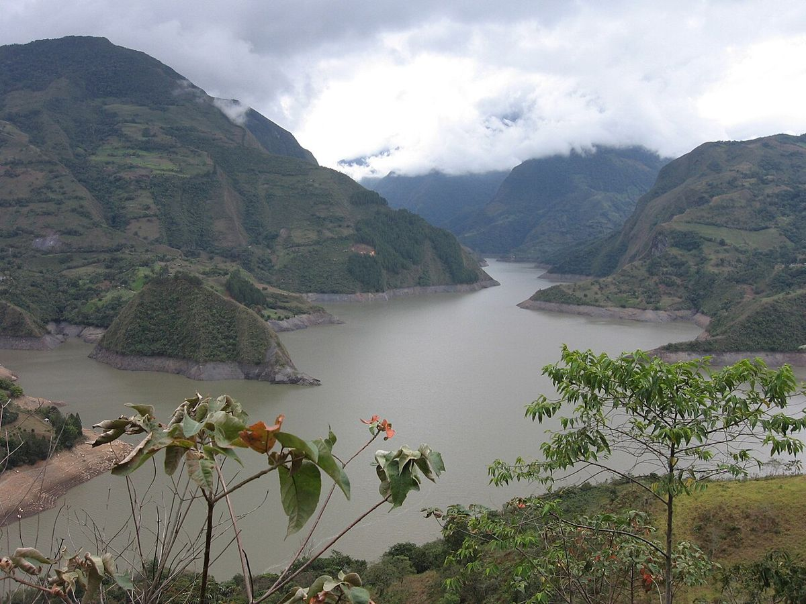
Macanal / Almeida
Kitesurf y vuelo en parapente
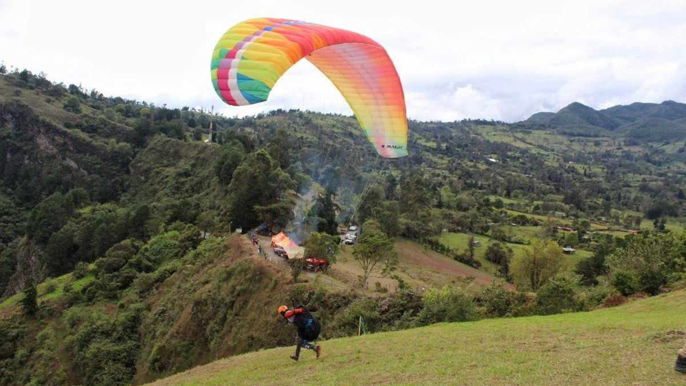
Pachavita
Parapente
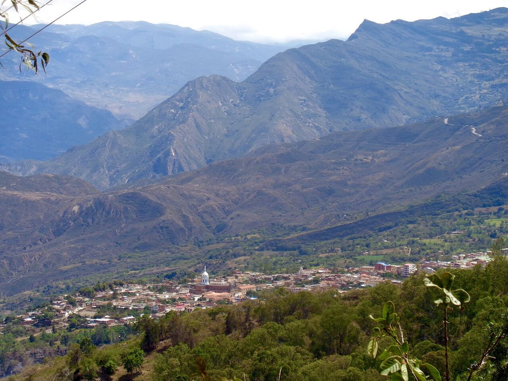
Soatá / Boavita
Parapente
Cuéntanos qué lugar o actividad deberíamos agregar, o si algún dato está desactualizado.